鎌倉位於神奈川縣沿海地區，距離東京約一小時車程。這裡不僅擁有豐富的武家古都歷史與神社寺院，還能搭乘復古的江之電沿著湘南海岸線漫遊，充滿濃厚的夏日青春氣息。
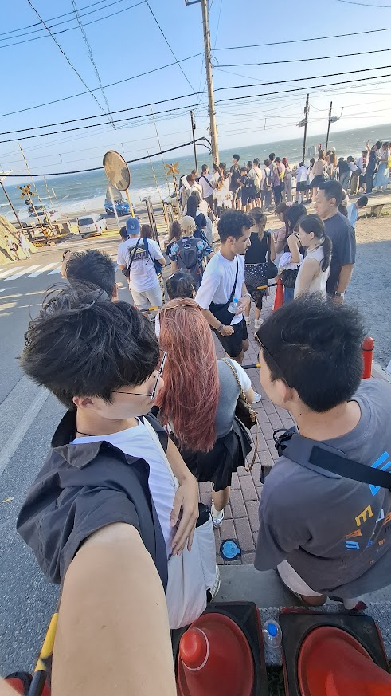
鎌倉高校前平交道
因經典動漫《灌籃高手》片頭曲而聞名的海邊平交道，綠色的江之電電車駛過平交道時，背景就是閃耀的湘南海岸與藍天，是鎌倉最熱門的打卡地標。
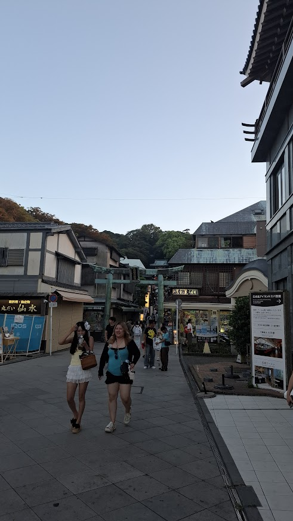
江之島
搭乘江之電即可抵達的沿海小島，島上有江島神社、展望燈塔與海蝕洞「岩屋」，沿途還能品嚐當地著名的吻仔魚丼與現壓章魚仙貝。
旅遊照片紀錄
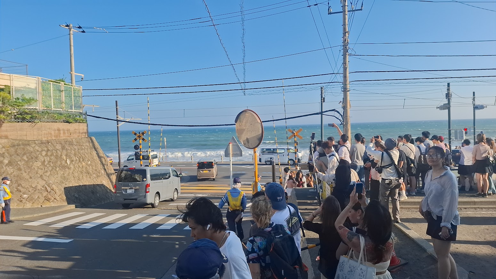
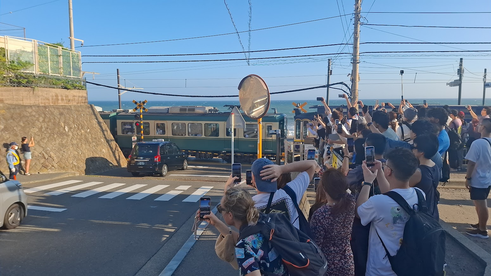
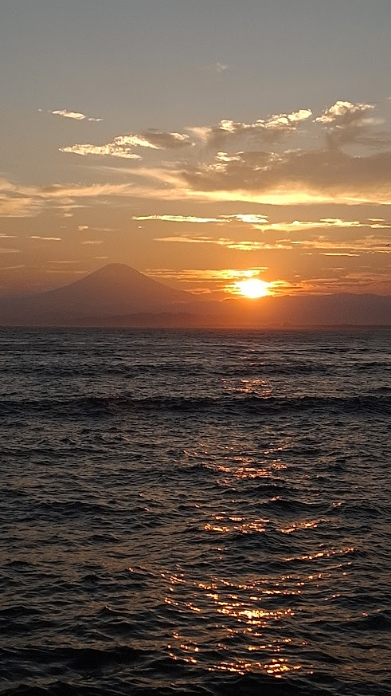
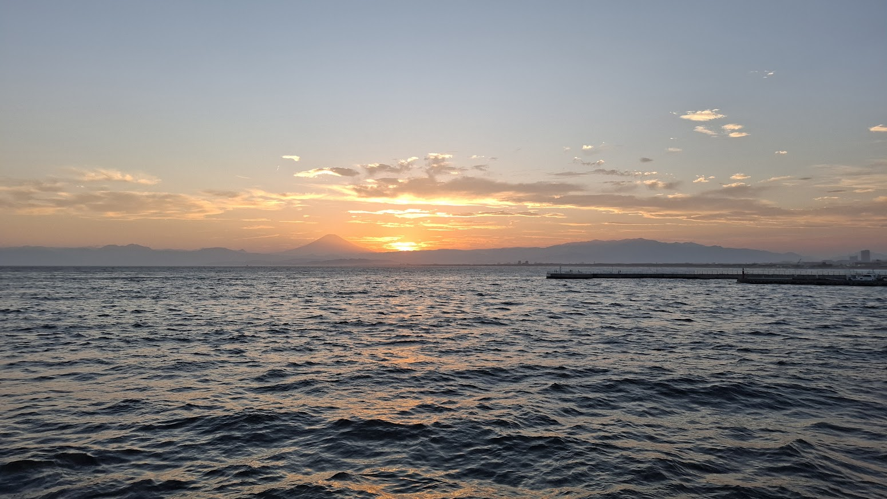
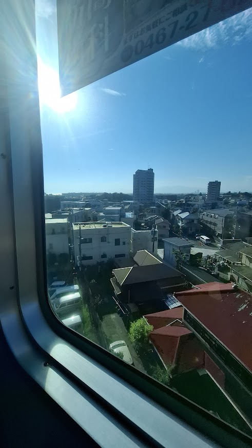
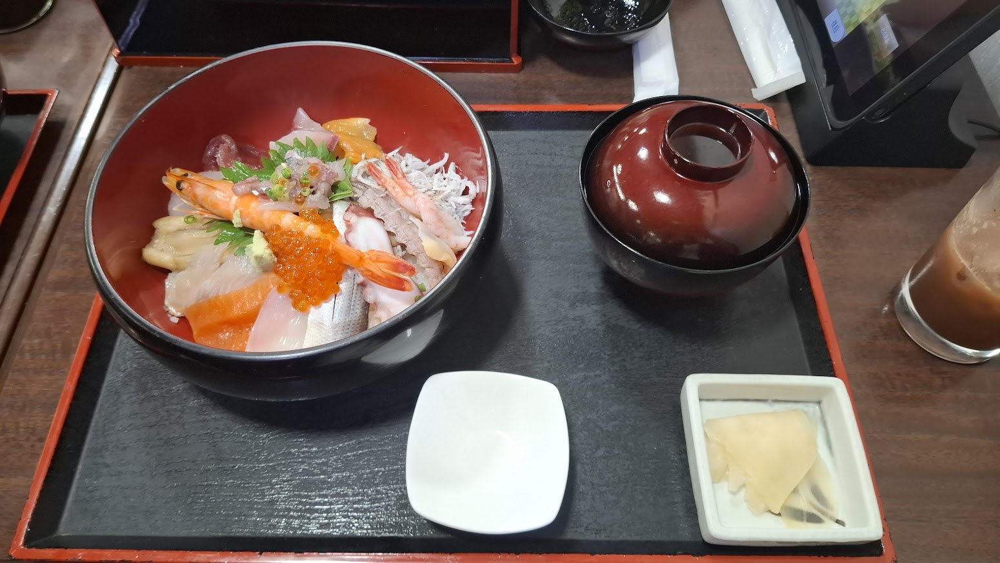
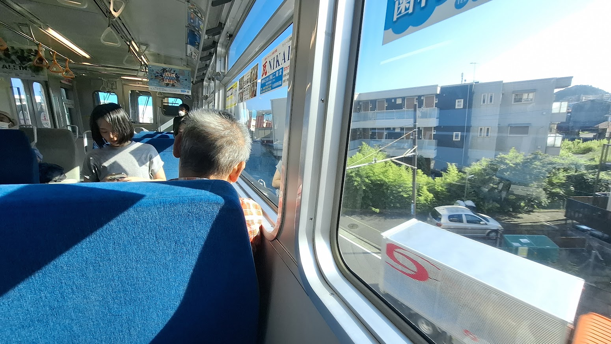
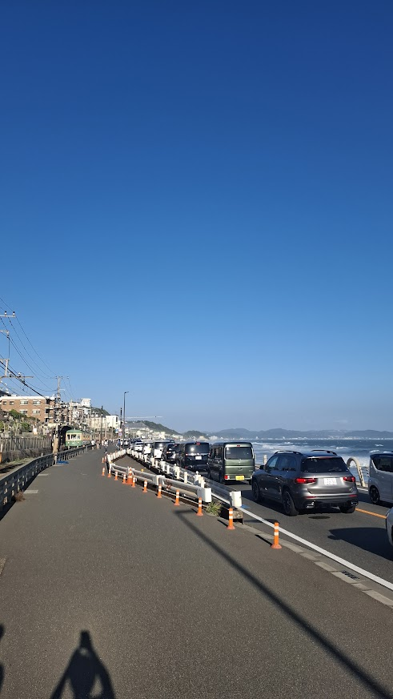
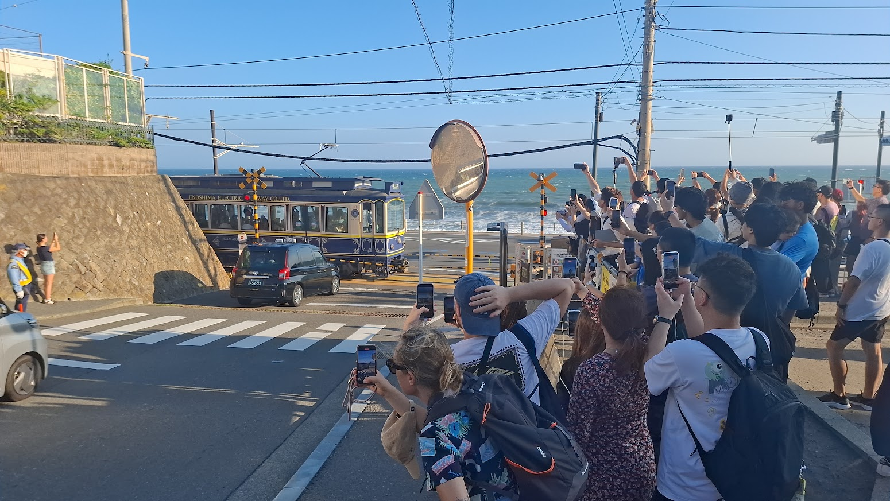